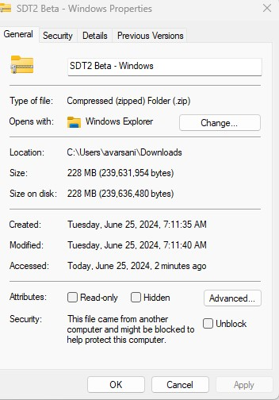
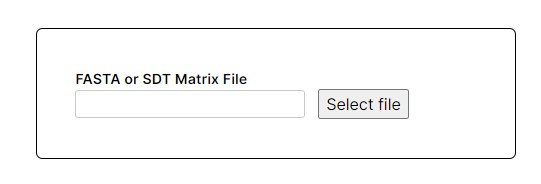
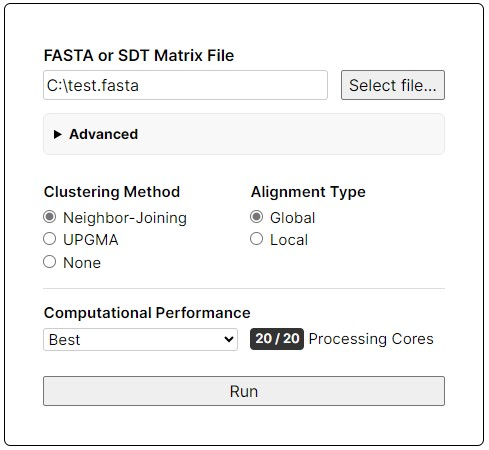
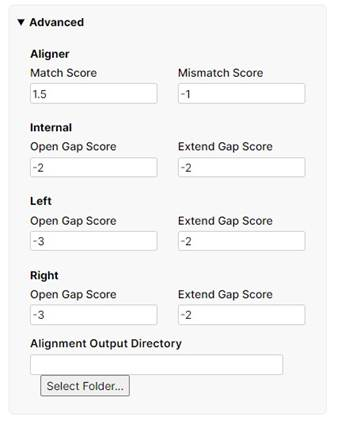
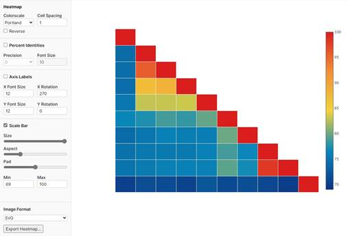
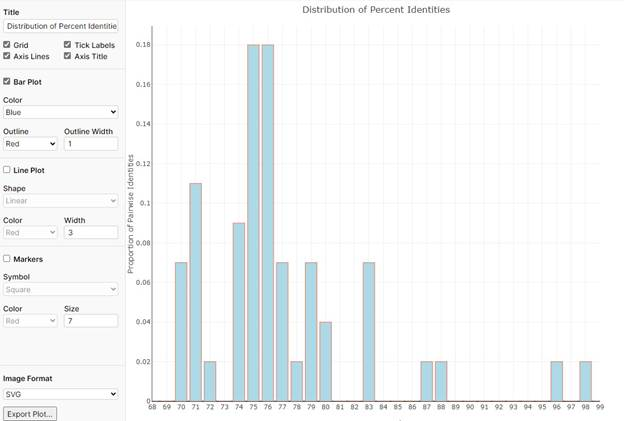

Sequence Demarcation Tool 2.0.0 Beta
Sequence Demarcation Tool 2.0.0 Beta (SDT 2) is a rebuilt standalone application for Windows/Mac/Linux operating systems, built off the computational and design concepts of the original Sequence Demarcation Tool [1]. The application takes the following input: a FASTA file, or a matrix generated by either SDT or SDT2. Given a FASTA file of genetically related sequences, SDT 2 performs pairwise alignments of all combinations of two sequences using the BioPython PairwiseAligner module. Rather than using external multiple-sequence aligners such as: MAFFT, MUSCLE, and CustalW2. SDT2s alignments are strictly pairwise and performed within its own code allowing for improved performance. The pairwise identity score of each alignment is then calculated by a modified hamming distance function that forgoes alignment generated gaps. Clustering by sequence identity scores can optionally be performed by Neighbor-joining or Unweighted pair group method with arithmetic mean. The resulting analysis is visualized as a 2D matrix heatmap, as well as a distribution plot of percent identities.
Download and Installation A. Windows:
The program can be downloaded from:
Once downloaded, right click the .zip file and scroll to the checkbox that says:

And check ‘Unblock’
Then extract to a directory and click SDT2.exe
The program can be downloaded from:
Once downloaded, the file must be removed from quarantine via the following command:
xattr -d com.apple.quarantine [location of the app] e.g.
xattr -d com.apple.quarantine ~/Downloads/SDT2\ Beta.app C. Linux
TBA
Features

The main loading dialogue box with a Select File to select a file for upload. The file type chosen will determine the next screen. When a fasta is selected from the Select File button, the Run Options screen is loaded, for SDT/SDT2 matrix files, the Viewer screen is loaded.

The Run Options screen includes basic options such as the choice of local or global alignment, clustering method via Neighbor Joining or UPGMA, and basic performance options.
• FASTA or SDT Matrix File: Allows users to change the FASTA file or SDT matrix file to be analyzed.
• Select file...: A button to browse and select the file from the local system.
a. Clustering Method: Choosing a clustering method will reorder sequences using a clustering algorithm based on the calculated pairwise percent identities.
• Neighbor-Joining: Uses the Neighbor-Joining method for clustering sequences based on distance and then reorders the sequences accordingly.
• UPGMA: Uses the Unweighted Pair Group Method with Arithmetic mean for clustering sequences based on distance and then reorders the sequences.
• None: No clustering will be performed. This option maintains the sequence order of the fasta input file.
b. Alignment Type:
• Global: Performs global alignments of sequences.
• Local: Performs local alignments of sequences.
a. Performance Selection: Choose the desired performance setting.
• Best: Uses all available processing cores.
• Balanced: uses 50% of available processing cores.
• Low: Uses a single core, no multiprocessing.
b. Processing Cores: Allows the user to specify the number of processing cores to be used for computation (e.g., 20/20). VI. Run Button
Run: Initiates the sequence comparison process based on the selected settings. VII. Advanced Settings

Clicking Advanced from the runner settings allows for the specification of alignment parameters including match and mismatch scoring as well as gap and gap extension penalties. Clicking Select Folder provides a path for alignment output directory where all resulting pairwise alignments from the run will be stored. Alignments are not written to disk by default. If selected, each alignment is stored a single file between two sequences, rather than a more palatable multi-fasta file per sequence, which should be considered when selecting this option for large datasets.
• Match Score: Sets the score for matching bases in the alignment. Higher scores will offset alignment mismatch and gap penalties.
• Mismatch Score: Sets the penalty for mismatched bases in the alignment. Higher negative values indicate a larger penalty for mismatches.
▪ Open Gap Score: Sets the penalty for opening a gap within the sequence. Higher negative values indicate a larger penalty.
▪ Extend Gap Score: Sets the penalty for extending an already opened gap. Higher negative values indicate a larger penalty.
▪ Open Gap Score: Sets the penalty for opening a gap at the beginning (left side) of the sequence. Higher negative values indicate a larger penalty.
▪ Extend Gap Score: Sets the penalty for extending an already opened gap at the beginning (left side) of the sequence. Higher negative values indicate a larger penalty.
▪ Open Gap Score: Sets the penalty for opening a gap at the end (right side) of the sequence. Higher negative values indicate a larger penalty.
▪ Extend Gap Score: Sets the penalty for extending an already opened gap at the end (right side) of the sequence. Higher negative values indicate a larger penalty.
a) Select...: Browse and select the folder where the alignment output files will be saved.
A header bar is available at the top of either plot view once a data file is loaded. The New button recalls the main loading screen to load a new file.
Run stats are available to the right which display the number of sequences loaded from the file, and the file name.
• New Button: Allows users to start a new analysis, brings up Main Loading Screen.
• Export Data Button: Opens the Export Data modal.
• Sequence Information: Displays the number of sequences and the name of the input file.
• Heatmap Tab: Allows users to view and configure the heatmap.
• Distribution Tab: Allows users to view and configure the distribution plot.
• Text Box: Enter the path to the output folder where the data will be saved.
• Select Folder... Button: Browse and select the output folder from the file system.
2. Cluster By Percent Identity
• Checkbox: Enable or disable clustering by percent identity.
• Threshold 1: Set the first threshold value for clustering by percent identity.
• Threshold 2: Set the second threshold value for clustering by percent identity.
• Cancel Button: Cancel the export operation.
• Export Button: Export the data based on the configured settings

• Color Scale: Choose the color scheme for the heatmap from a list of stored color scales.
• Cell Spacing: Adjust the spacing between cells.
• Precision: Set the number of decimal places for the percent identities between 0 and 2 points.
• Font Size: Set the font size for the percent identities displayed on the heatmap.
• X Font Size: Set the font size for the X-axis labels.
• X Rotation: Set the rotation angle for the X-axis labels.
• Y Font Size: Set the font size for the Y-axis labels.
• Y Rotation: Set the rotation angle for the Y-axis labels.
• Height: Adjust the vertical length of the scale bar using the slider.
• width: Adjust the horizontal length of the scale bar using the slider.
• Pad: Adjust the padding around the scale bar using the slider.
• Min: Set the minimum value for the scale bar, default is the lowest identity score in the current dataset.
• Max: Set the maximum value for the scale bar, default is 100.
• Format Selection: Choose the format for exporting the heatmap image (options include SVG, PNG, JPG)
• Export Button: Click the "Export Heatmap..." button to save the configured heatmap image to a specified directory.

• Title Text: Set the title of the plot.
• Grid: Toggle the grid on or off.
• Tick Labels: Toggle the tick labels on or off.
• Axis Lines: Toggle the axis lines on or off.
• Axis Title: Toggle the axis title on or off.
• Color: Set the color of the bars in the bar plot.
• Outline: Set the color of the bar outlines.
• Outline Width: Adjust the width of the bar outlines.
• Shape: Set the shape of the line plot (options include Linear, Spline, Bar)
• Color: Set the color of the line.
• Width: Adjust the width of the line.
• Symbol: Set the symbol for the markers (e.g., Square).
• Color: Set the color of the markers.
• Size: Adjust the size of the markers.
• Format Selection: Choose the format for exporting the distribution plot image (options include SVG, PNG, JPG)
• Export Button: Click the "Export Plot..." button to save the configured plot image.